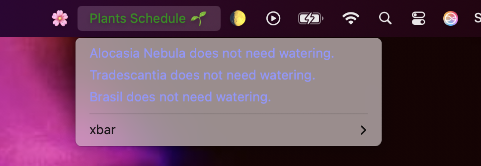

🌼 Featured Projects

🌷 Plant Watering Reminder Plugin
This is a simple yet powerful plugin for the macOS xbar application that reminds you when to water your plants. It tracks the last watered date and alerts you when it's time to give your plants some love.

✨ Airbnb Clone
A full-stack Airbnb clone built with a Ruby on Rails backend and a React frontend. Continuously enhancing the app with new features to deepen my understanding of web development and improve my skill set.

☁️ Record Player
Work in progress — a playful vinyl record player powered by the Spotify API. Users can log into their Spotify account to play their music through a charming, custom-designed interface. This project highlights my passion for blending thoughtful design with functional code